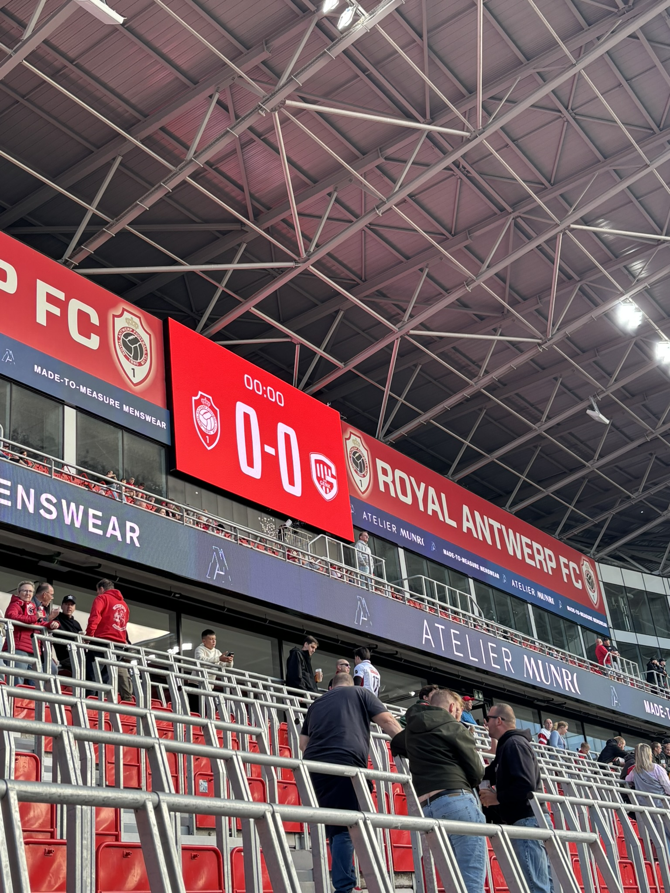
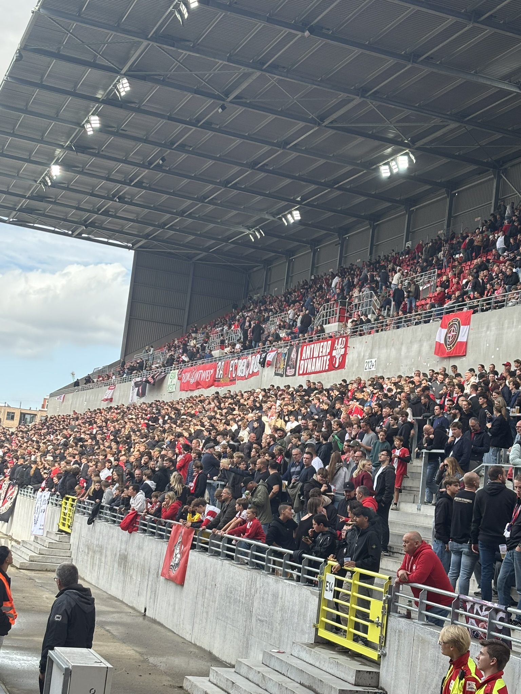

Passies en Hobby's
Mijn interesses
Mijn grootste interesse is voetbal. Ik ga elke thuiswedstrijd van Royal Antwerp FC in het stadion kijken.
Mijn droom is websites en software voor voetbalploegen te ontwikkelen. Hiermee wil ik hun helpen om op een efficiënte manier potentiële talenten te verwerven. Ik ben daarom ook ontzettend benieuwd hoe ik deze ervaringen kan overbrengen naar die specifieke werkplek.

Innovatie & Digitale Trends

Waarom programmeren?
De reden waarom ik zo geïnteresseerd ben in software ontwikkeling en programmeren is omdat de sector zo snel verandert.
De wereld van software en technologie staat nooit stil, en dat is precies wat het zo boeiend maakt. Omdat nieuwe ideeën, tools en technieken elkaar razendsnel opvolgen, raak je in de softwarewereld nooit uitgeleerd. Voor ontwikkelaars betekent dit dat geen enkele dag hetzelfde is. Je krijgt continu de kans om slimmere oplossingen te bedenken, efficiënter te werken en mee te bouwen aan de toepassingen van de toekomst. Die constante vernieuwing daagt mij uit om nieuwsgierig te blijven en mijzelf te blijven ontwikkelen.
Overzicht & Favoriete Onderwerpen
Hieronder vind je een gestructureerd overzicht van de vakgebieden en onderwerpen waar ik mij momenteel het liefste in verdiep:
| Onderwerp | Categorie | Niveau / Ervaring |
|---|---|---|
| Websites | Webdevelopment | In opleiding |
| Programmeren | Software Development | In opleiding |
| App Development | Programmeren | Interesse / Hobby |
Met deze opleding hoop ik later een deel uit te maken van de nieuwe technologie in de sportwereld. De optimale ontwikkeling van potentiële spelers garanderen en de nodige hulp aan jeugdtrainers bieden.